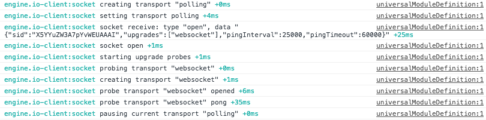
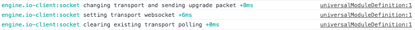

Socket.io
“Socket.IO is an engine that enables real-time bidirectional event-based communication. ”

Background information
- Open source
- Run by contributors
- December 2016, v1.7.2
Possibilities with sockets
- Real-time data feed
- Instant messaging
- Send images, audio and video
- Concurrently edit documents
Advantages of sockets: performance
- Load balancing
- Smaller traffic size: no need for HTTP headers and chunked encoding frames (HTTP 1.1)
- Lightweight parsing, low CPU usage: no need to figure out what kind of message it is
Server code
var app = require('express')();
var http = require('http').Server(app);
var io = require('socket.io')(http);
app.get('/', function(req, res){
res.sendFile(__dirname + '/index.html');
});
io.on('connection', function(socket){
socket.on('chat message', function(msg){
io.emit('chat message', msg);
});
});
http.listen(3000, function(){
console.log('listening on *:3000');
});Client code
index.html
app.js
const socket = io();
// Emit code to backend
socket.emit('chat message', 'Wooh Awesomeeee');
// Process data from the backend
socket.on('chat message', msg => chatArray.push(msg));Emitting events
socket.emit(eventName[, ...args][, ack])socket.emit('redButtonClicked', {
data1: 'pizza',
data2: 'form'
});Reserved events
- error
- connect
- disconnect
- disconnecting
- newListener
- removeListener
- ping
- pong
Multiplexing
Some sites may want to namespace a socket (e.g send all your chat app data to one namespace, and all your regular data to a different namespace)
Data of different namespaces can be sent over a single socket
Socket id
An unique identifier for the socket session. Set after the connect event is triggered, and updated after the reconnect event.
Example: 8CBxbt3PrTv2yR2sAAAC
Modules: socket.io-emitter, -redis
Emit events to sockets from outside your Socket.IO process
https://github.com/socketioLogging and debugging
localStorage.debug = '*'
localStorage.debug = 'socket.io-client:manager'
Establishing connection
A long-polling connection is established first. Then, Socket.IO tries to upgrade to better transports that are "tested" (HTML5 WebSocket).
 Configuration object
const socket = io({
autoConnect: true,
});options: {
reconnection // (Boolean) whether to reconnect automatically (true)
reconnectionDelay //(Number) how long to initially wait before attempting a new reconnection (1000).
reconnectionDelayMax // (Number) maximum amount of time to wait between reconnections (5000).
timeout // (Number) connection timeout before a connect_error and connect_timeout events are emitted
autoConnect // (Boolean) by setting this false, you have to call manager.open whenever you decide it's appropriate
}